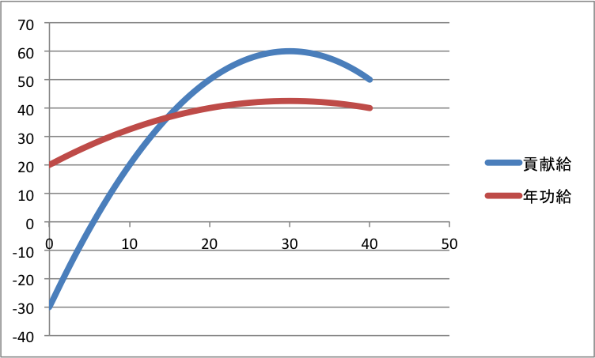

経済学で出る数学
ワークブックでじっくり攻める：応用問題
年功賃金と積分（作成：2016.03.03）
【問】 ある企業の賃金体系について，以下の問に答えなさい．
- 賃金を企業に対する貢献に見合った歩合で払うこととする．このときの賃金カーブを求めなさい．また，採用から退職までの総支払額を求めなさい．ただし賃金カーブは
- ２次曲線である
- 初年次は貢献度は $-30$ 万円である
- 勤続 $30$ 年目に貢献度は最大の $60$ 万円となる
- 停年は $40$ 年である
を満たすものとする
- 賃金を年功序列で払うこととする．このときの賃金カーブを求めなさい．ただし，採用から退職までの総支払額が貢献に見合った度合いと一致するようにしなさい．また賃金カーブは
- ２次曲線である
- 初任給は $20$ 万円である $40$ 万円である
を満たすものとする
【解答】
-
求める関数は，貢献度最大の条件から， $f(x)=a(x-30)^2+60$ と書ける．
$x=0$ を代入することで，初年次の貢献度条件から，
$900a+60=-30$ となるため，$\displaystyle a=-\frac{1}{10}$ である．したがって
\[
f(x)=-\frac{1}{10}(x-30)^2+60=-\frac{1}{10}x^2+6x-30.
\]
賃金の総支払額は
\begin{align}
\int_{0}^{40}f(x)dx&=\int_{0}^{40}(-\frac{1}{10}x^2+6x-30)dx\\
&=\Bigl[-\frac{1}{30}x^3+3x^2-30x\Bigr]_{0}^{40}\\
&=\Bigl[-\frac{1}{30}40^3+3\cdot 40^2-30\cdot 40\Bigr]_{0}^{40}\\
&=-\frac{6,400}{3}+4,800-1,200=\frac{4,400}{3}\\
\end{align}
-
求める関数は，初任給の条件から， $g(x)=cx^2+dx+20$ と書ける．また退職時の給与待遇から $g(40)=40$ であるので，$1600c+40d+20=40$，
すなわち $\displaystyle d=\frac{1}{2}-40c$ となる．ゆえに，総賃金は
\begin{align}
\int_{0}^{40}g(x)dx&=\int_{0}^{40}\bigl(cx^2+(\frac{1}{2}-40c)x+20\bigr)dx\\
&=\Bigl[\frac{c}{3}x^3+\frac{1}{4}x^2-20cx^2+20x\Bigr]_{0}^{40}\\
&=\frac{64,000c}{3}+400-32,000c+800\\
&=-\frac{32,000c}{3}+\frac{3,600}{3}\\
\end{align}
これが上で求めた $\displaystyle \frac{4,400}{3}$ と一致するので，
$\displaystyle c=-\frac{1}{40}$．
求める賃金カーブは，$\displaystyle g(x)=-\frac{1}{40}x^2+\frac{3}{2}x+20$ である．

【解答終】
【メモ】
解答方針はこれでいいはず（たぶん）．計算結果に自信なし．
【メモ終】
【Further Reading】
安藤至大『これだけは知っておきたい働き方の教科書』ちくま新書（2015）
ふろく（２）応用問題 一覧へ